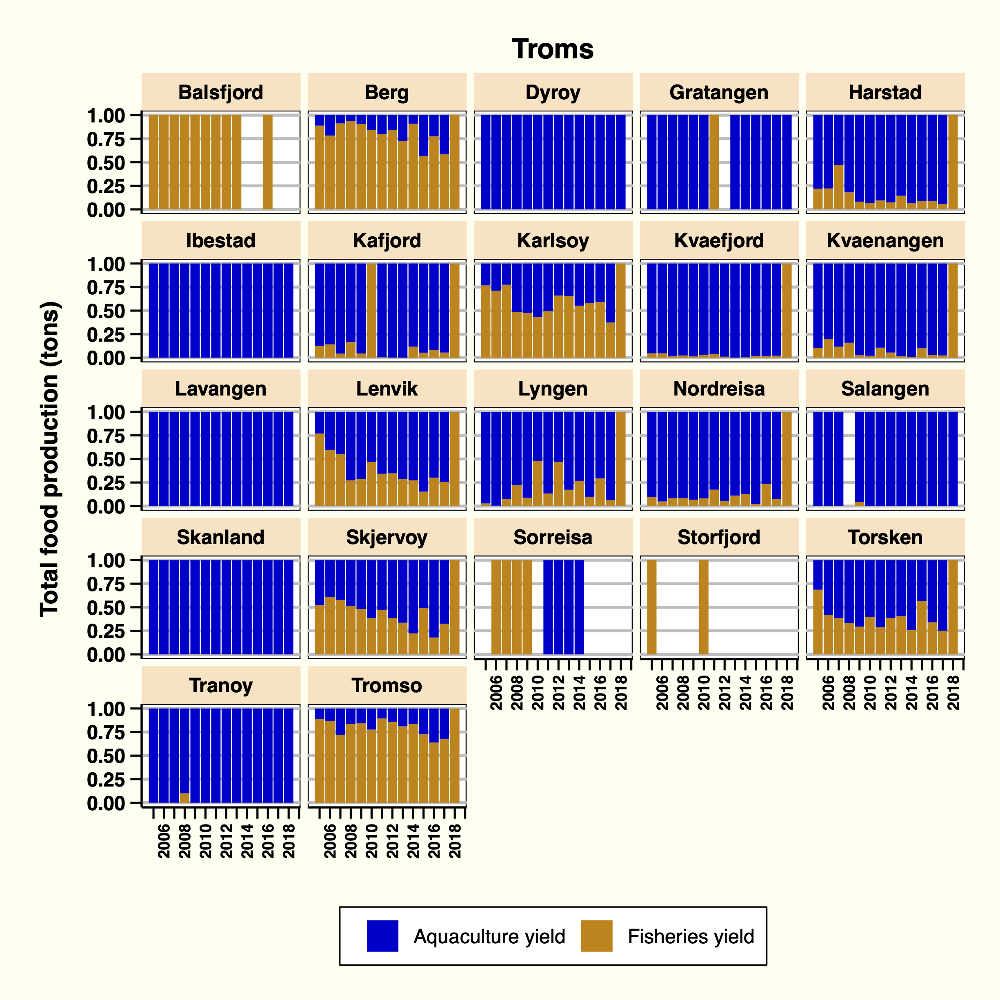
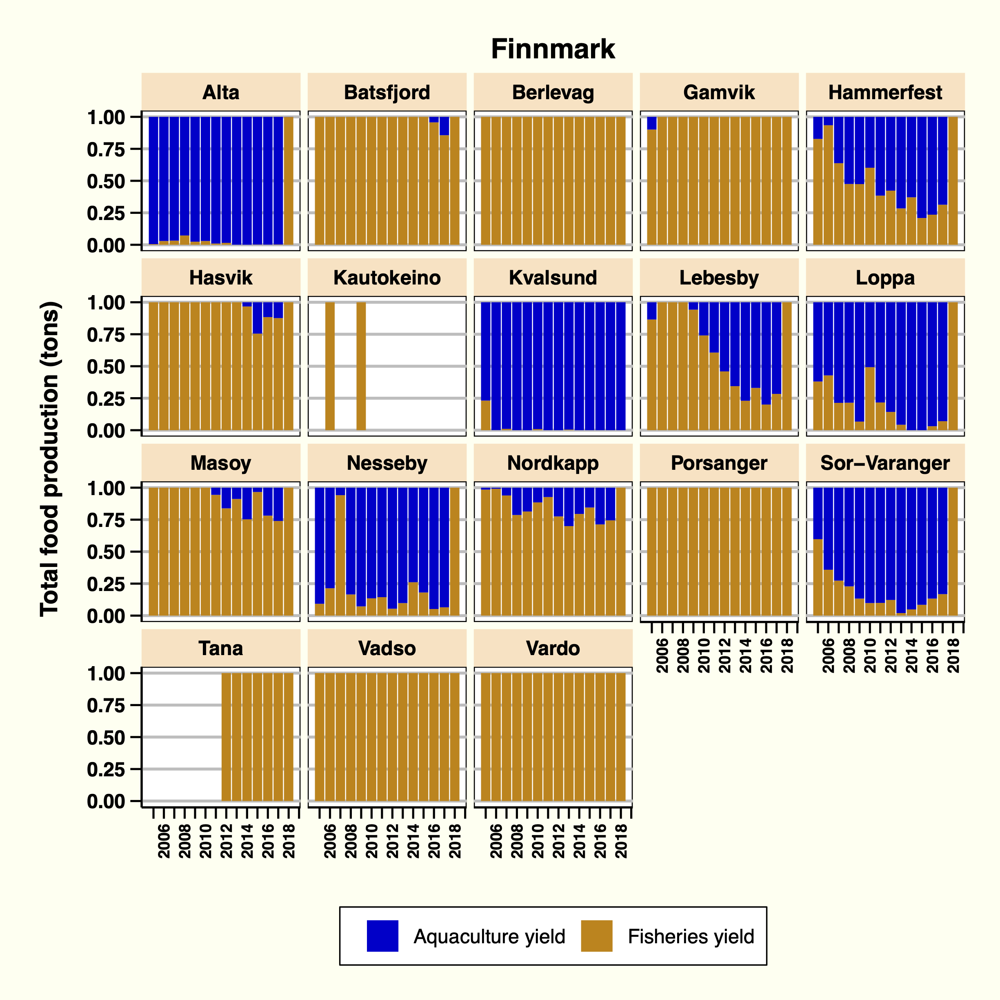

2.4 Contribution of fisheries and aquaculture to the total seafood production yield: graphics
Below are the graphs of proportional contribution of aquaculture and fisheries total landings to ocean-based food production in northern Norway. The data is presented for each municipality of the three counties: Nordland, Troms, and Finnmark.
Nordland
Figure 2: Proportion of fisheries and aquacuture production in Nordland

Finnmark
Figure 3: Proportion of fisheries and aquacuture production in Troms

Figure 4: Proportion of fisheries and aquacuture production in Finnmark